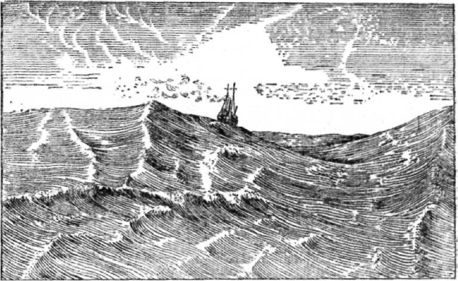

Волны.

Волнение на море представляется нам как самое грозное явление морской стихии. «Кто в море не бывал, тот и страху не видал», — говорит пословица. Однако, как ни велики волны в бурю, в настоящее время они не страшны кораблю. Современные пароходы достаточно надёжны для плавания по самому бурному морю (рис. 8).

Рис. 8. Несмотря на громадные волны, корабли уверенно плывут в океане.
Почему образуются волны на поверхности моря?
Ветер, надавливая на поверхность моря, создаёт в ней углубление, вследствие чего вода по соседству вспучивается. Так образуется волна. Эта волна стремится упасть и тем самым вызывает образование новой волны, вытесняя соседнюю воду. Возникающие маленькие волны сталкиваются и образуют большие. Всё выше и выше поднимаются гребни волн, и в сильный шторм по морю идут волны огромной величины.
При образовании волны частицы воды не перемещаются вперёд; они лишь движутся по кругу, поставленному вертикально. Однако, если ветер долго дует в одном направлении, то образуется и горизонтальное движение воды — ветровое- морское течение. Представьте себе, что подъёмным краном мы поднимаем автомобиль и заставим мотор вращать колёса. В таком положении колёса, вращаясь в воздухе, не образуют перемещения машины, хотя каждая частица колёс и совершает круговое движение. Но если мы машину с вращающимися колёсами опустим на землю, то в результате трения колёс о землю автомобиль начнёт двигаться по направлению движения колёс. Так и в море. В результате трения длительно дующего ветра о поверхность воды образуются волны, с которыми будут перемещаться в направлении ветра и воды поверхностного слоя моря.
Ранее предполагали, что волны проникают на очень большую глубину. На самом деле это не так. Волнение с глубиной постепенно затухает и распространяется только до глубины, равной длине волны. Таким образом, при штормовой волне в 8 метров высотою и длиною в 150 метров волнение практически почти полностью прекращается на глубине 150 метров.
Какова может быть величина волн?
В океане наблюдались волны высотою в 13–14 метров и длиною в 400 метров. Считается, что выше 20 метров ветровых волн не бывает. Максимальную длину ветровой волны наблюдали в 824 метра; она распространялась со скоростью более 100 километров в час.
Огромные волны образуются при землетрясениях, когда землетрясения происходят на берегу моря и особенно на дне прибрежной области океана. Так, в 1883 году, во время извержения вулкана Кракатау в Зондском проливе (Индонезия) образовалась волна, достигшая 35 метров высоты и 148 километров длины! Эта волна смыла всё, даже почву с небольших близлежащих островов. Она нанесла громадные опустошения и другим островам Индонезии.